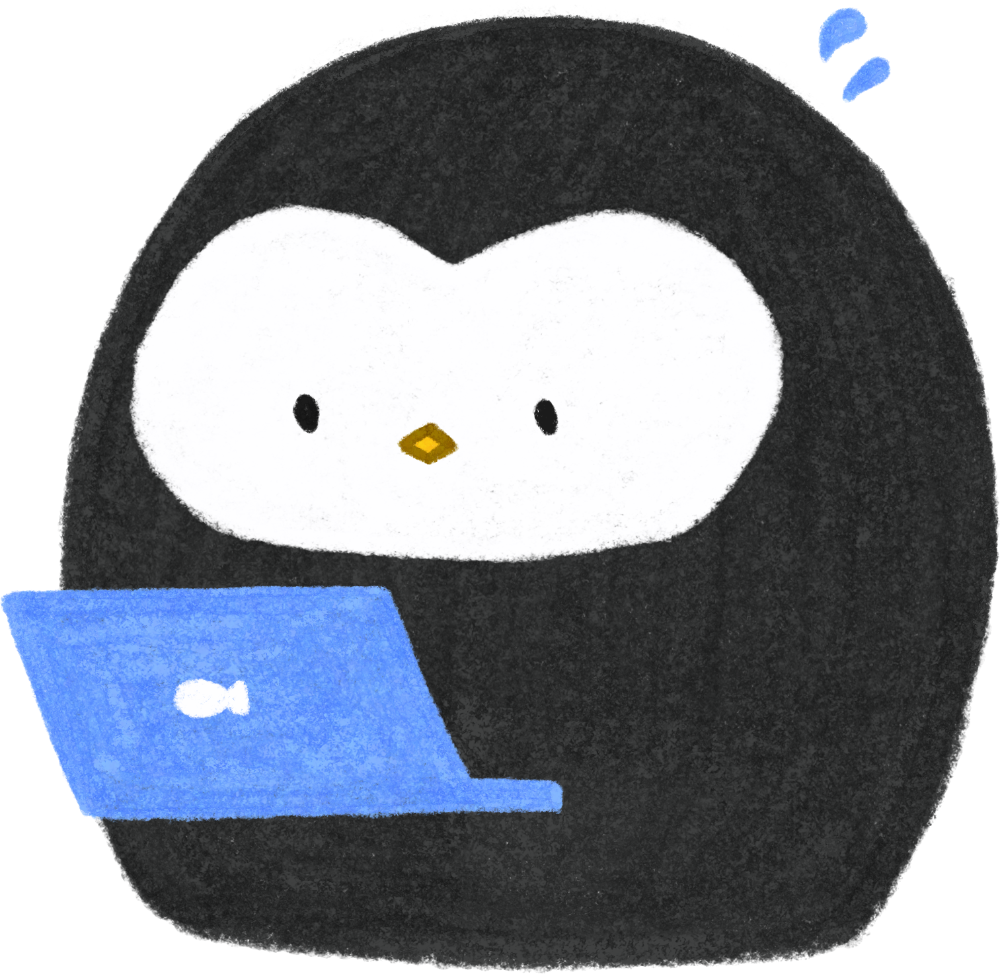
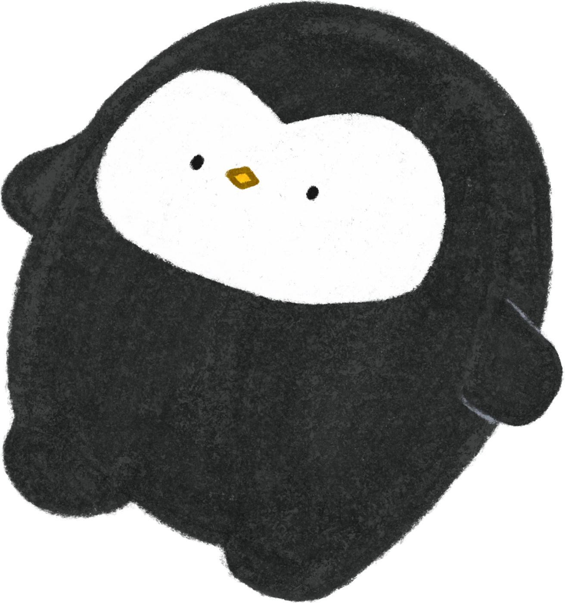

안녕하세요! 저는 김펭긴 입니다!
클릭해서 드래그하거나 방향키로 펭귄을 돌려보세요.
그림을 그리고, 코드로 화면을 만들어요. 제가 좋아하는 것들과 직접 만든 작업들을 이곳에 담았어요. 천천히 둘러봐 주세요.

<coding />
웹 퍼블리셔, 프론트엔드를 지향해요
10년간 반려동물 미용사로 일하며 상대의 요구를 듣고 세심하게 반영하는 태도를 배웠어요. 지금은 HTML, CSS, JavaScript와 React로 화면을 만들며, 보호소 홈페이지 제작과 인턴십을 통해 반응형 웹과 협업을 경험했어요. 디자인의 의도를 살리고, 누구나 편리하게 사용할 수 있는 화면을 만들고 싶어요.
-
01 / 개인 프로젝트
오늘도,펭긋
캐릭터 브랜드를 담은 반응형 쇼핑몰
기획 디자인 퍼블리싱
- HTML
- CSS
- JavaScript
- Cafe24
작업과정 보기
-
구현 과정
HTML, CSS, JavaScript로 메인 화면을 직접 구현하고, 카페24 쇼핑몰 환경에 맞게 적용했습니다. 다양한 화면 크기에 대응하는 반응형 레이아웃을 구성하고 상품 등록까지 진행했습니다.
-
어려웠던 점
캐릭터를 여러 상품 이미지에 활용하면서 일관된 분위기를 유지하는 것이 어려웠습니다. AI로 생성한 이미지가 의도한 콘셉트와 맞지 않아 반복적인 수정과 검토가 필요했습니다.
-
해결 방법
ChatGPT로 캐릭터 콘셉트와 이미지 제작 방향을 구체화하고, MixBoard에서 프롬프트를 수정하며 결과물을 비교했습니다. 생성된 이미지를 직접 검토하고 선별해 브랜드 분위기에 맞는 상품 이미지로 활용했습니다.
-
02 / 팀 프로젝트
포캣멍보호소
방문자가 보호 동물 정보를 확인하고 입양과 후원을 문의할 수 있도록 제작한 팀 프로젝트입니다.
프론트엔드 개발 · 공통 스타일 구성 · 반응형 UI 구현 · API 연동
- React
- CSS
- Axios
작업과정 보기
-
구현 과정
CSS 리셋과 공통 스타일 가이드를 설정하고, CSS 변수로 색상·글자 크기·여백을 관리했습니다. 미디어 쿼리로 화면 크기에 따른 레이아웃을 구현하고, 백엔드 API와 연동해 유기동물 정보를 화면에 표시했습니다.
-
어려웠던 점
각 페이지에서 Header와 Footer를 개별적으로 불러와 코드가 반복됐습니다. 새 페이지를 추가할 때마다 공통 영역을 다시 구성해야 해서 관리가 번거로웠습니다.
-
해결 방법
React Router의 Outlet을 활용해 공통 레이아웃을 분리했습니다. Header와 Footer는 한곳에서 관리하고 페이지별 콘텐츠만 바뀌도록 구성해 중복 코드를 줄이고 페이지를 추가하기 쉽게 개선했습니다.
Drawing
좋아하는 그림이 누군가에게 필요한 디자인이 되도록.
취미로 시작한 그림을 미리캔버스와 Adobe Stock에 올리며, 사람들이 어떤 이미지를 찾고
어디에 활용하는지 살펴보게 됐어요.
시장과 트렌드를 조사하면서 만드는 사람의
취향뿐 아니라 사용하는 사람의 목적도 생각하게 됐고, 보기 좋으면서 활용하기 편한 그림을
고민하고 있어요.
